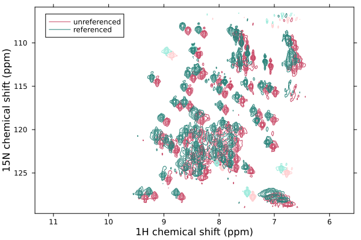

Working with NMR data
NMR measurements are arrays of data, with additional numerical data associated with each dimension, or axis. Within NMRTools, these data are stored as NMRData structures, which provides a convenient way to encapsulate both the data, axis information, and additional metadata providing information on acquisition or processing.
Loading NMR data
NMR data are loaded using the loadnmr function. This can handle processed Bruker experiments, or NMRPipe-format data.
# load bruker experiment number 1 from a directory '2D_HN'
# by default, NMRTools will load bruker processed data from proc 1
spec2d = loadnmr("exampledata/2D_HN/1")
# load a different processed spectrum
spec1d = loadnmr("exampledata/2D_HN/1/pdata/101")
# load data from NMRPipe format, using a template
spec3d = loadnmr("exampledata/pseudo3D_HN_R2/1/ft/test%03d.ft2")loadnmr will attempt to locate and parse acquisition metadata, such as acqus files. If the spectrum file is located elsewhere (for example, if you are loading a file that was processed with NMRPipe), then you can specify the path to the experiment folder using the experimentfolder keyword argument.
When spectra are loaded, a simple algorithm runs to estimate the noise level, which is often used for subsequent plotting commands.
Manipulating spectrum data
NMRData structures encapsulate a standard Julia array. This can be accessed using the data command. However, through the magic of multiple dispatch, most operations will work transparently on NMRData variables as if they are regular arrays, with the added benefit that axis information and metadata are preserved. Data can be sliced and accessed like a regular array using the usual square brackets:
spec1d[100:105]
spec2d[3:4, 10:14]However, more conveniently, value-based selectors can also be used to locate data using chemical shifts. Three selectors are defined:
At(x): select data precisely at the specified valueNear(x): select data at the nearest matching positionx .. y: select the range of data betweenxandy(closed interval)
For example:
spec1d[8.2 .. 8.3] # select between 8.2 and 8.3 ppm
spec2d[Near(8.25), 123 .. 124] # select near 8.25 ppm in the first dimension
# and between 123 and 124 ppm in the second dimensionWhen data are sliced, new NMRData structures are created and their axes are updated to match the new data size.
When NMRData structures are sliced, copied, or otherwise modified, they inherit the same dictionary of metadata as the original variable. This means that any changes to metadata will affect both variables. To resolve this, make a deepcopy of the variable. Note also that any acquisition metadata might not reflect the correct shape of the data any more.
Accessing axis data
Information on data dimensions is stored in NMRDimension structures. These can be accessed with the dims function:
# get the first dimension of this two-dimensional experiment
dims(spec2d, 1)F1Dim Sampled{Float64} ReverseOrdered Regular DimensionalData.Dimensions.Lookups.Points
wrapping: 1216-element LinRange{Float64, Int64}:
11.0712, 11.0668, 11.0624, 11.058, …, 5.7357, 5.73129, 5.72689, 5.72249NMRDimensions can be treated like vectors (one-dimensional arrays) for most purposes, including indexing and slicing. Value-based selectors can also be used, as for spectrum data. Like spectrum data, the underlying numerical data can be accessed if needed using the data function.
A heirarchy of types are defined for NMR dimensions, reflecting the variety of different experiments:
NMRDimensionFrequencyDimension: with specific typesF1DimtoF4DimNonFrequencyDimensionTimeDimension:TrelaxDim: for relaxation timesTkinDim: for kinetic evolution timesT1DimtoT4Dim: for general frequency evolution periods
GradientDimension: for e.g. diffusion measurements, with specific typesG1DimtoG4DimUnknownDimension: with specific typesX1DimtoX4Dim
Chemical shift referencing
The shiftdim function allows you to adjust the referencing of your NMR spectrum by adding a specified offset to the chemical shift values along a given dimension. This can be useful if you need to correct referencing errors or align spectra.
To use shiftdim, you need to specify the NMRData object, the dimension to adjust, and the offset value to add. Here is a simple example:
# Load example data
spec2d_original = exampledata("2D_HN")
# Add an offset of 0.1 ppm to the first dimension (specified as a number)
spec2d = shiftdim(spec2d_original, 1, 0.1)
# Add a further offset of -0.5 ppm to the second dimension (specified as F2Dim)
spec2d = shiftdim(spec2d, F2Dim, -0.5)
label!(spec2d_original, "unreferenced")
label!(spec2d, "referenced")
plot([spec2d_original, spec2d])
In this example, the chemical shift values in the first dimension of spec2d are increased by 0.1 ppm, and the values in the second dimension are decreased by 0.5 ppm.
The shiftdim function will adjust metadata (:offsetppm, :offsethz and :sf) to keep track of the altered referencing. A new metadata entry :referenceoffset will be created to keep track of this referencing.
Accessing metadata
NMRData objects contain comprehensive metadata on processing and acquisition parameters that are populated automatically upon loading a spectrum. Entries are divided into spectrum metadata - associated with the experiment in general - and axis metadata, that are associated with a particular dimension of the data.
Metadata entries are labelled by symbols such as :ns or :pulseprogram. Entries can be accessed using the metadata function, or directly as a dictionary-style lookup:
julia> metadata(spec2d, :ns)2julia> spec2d[:title]"13C,15N ubiquitin\n500 uM in 10% D2O, 20 mM Pi pH 6.5, 277 K, SOFAST-HMQC"
Acquisition parameters from Bruker acqus files are also parsed when loading data, and can be accessed using the acqus function. Parameters are specified either as lower-case symbols or strings (not case-sensitive). An index can be specified for arrayed parameters such as pulse lengths or delays.
julia> acqus(spec2d, "TE")276.9988julia> acqus(spec2d, :p, 1)9.199999999999998e-6
Axis metadata can be accessed by providing an additional label, which can either be numerical or the appropriate NMRDimension type, such as F1Dim etc:
julia> metadata(spec2d, F2Dim, :label)"15N"julia> spec2d[2, :bf]6.0817738e7julia> spec2d[F2Dim, :window]CosWindow(0.04783359999999993)